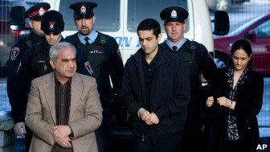

|
|
خانواده افغان متهم به قتل ناموسی مجرم شناخته شدند
Monday10 بهمن 1390
بی بی سی فارسی:سه نفر از اعضای یک خانواده افغان که به کانادا مهاجرت کرده اند، در دادگاهی در این کشور و در خصوص پرونده قتل سه دختر نوجوان و یک زن از اقوامشان مجرم شناخته شدند.
متهمان این پرونده پدر، مادر و برادر آن سه دختر نوجوان بودند و آن زن که کشته شده بود هم، همسر اول پدر دختران بود.
در سال ۲۰۰۹ میلادی بدن های بی جان این چهار نفر در اتومبیلی که در یک کانال آب غرق شده بود، در شهر کینگستون در ایالات اونتاریای کانادا، پیدا شد.
متهمان دست کم باید ۲۵ سال در حبس باشند.
دادستان می گوید که پدر این دخترها، از اینکه بر خلاف ارزش های خانوادگی، دو دختر بزرگش می خواستند که دوست پسر بگیرند، عصبانی بوده است.
شاهدها به دادگاه گفتند که محمد شفیع، چطور از رابطه داشتن مخفیانه دخترانش با پسرها عصبانیتش اوج می گرفته است. همچنین در دادگاه گفته شده بود که این فرد از شیوه لباس پوشیدن دخترانش که از نظر او "باز" بوده ناراضی بوده است.
قتل ناموسی
بخش عمده ای از شواهد دادستان مربوط به مکالمه های تلفنی آقای شفیع است که بعد از مرگ دخترانش هم درباره آنها با عصبانیت حرف می زده و آنها را "روسپی" می خوانده است.
رئیس دادگاه خطاب به محمد شفیع، همسرش طوبی و پسرشان حامد گفته که "دلیل واضحی که برای این قتل بی شرمانه و سنگدلانه داشتید این بوده که آنها حس ناموس پرستی شما را آزرده بودند."
دادگاه این سه نفر حدود سه ماه به طول انجامید و از موضوع های داغ در کانادا بود.
بعد از اینکه حکم دادگاه خوانده شد و این سه نفر مجرم شناخته شدند، محمد شفیع که فردی برای او حرف هایش را ترجمه می کرد، گفت: "ما جنایت کار نیستیم. ما قاتل نیستیم. ما این قتل ها را انجام ندادیم و این عدالت نیست."
جسدهای زینب، سحر و گیتی دختران محمد شفیع که ۱۹، ۱۷ و ۱۳ سال سن داشتند به همراه جسد همسر نخست پدرشان، رونا امیر محمد، در ماه ژوئن ۲۰۰۹ در کانال آب پیدا شده بود.
آنها برای دیدن آبشار نیاگارا رفته بودند و در راه بازگشت به مونترال تصمیم می گیرند که شب را در نزدیکی شهر کینگستون سر کنند.
دادستان می گوید که متهمان، اول قربانیانشان را خفه کرده بودند و بعد آنها را در اتومبیل گذاشته بودند و بعد با اتومبیل دیگری که داشتند از پشت به آن اتومبیل فشار آورده بودند تا اتومبیل قربانیان به درون کانال افتاده بود.
همچنین در دادگاه مطرح شد که پیش از کشته شدن این دختران، بارها آنها تهدید به مرگ شده بودند. دیگر اینکه دوتا دختر بزرگتر، بدون اجازه پدرشان دوست پسر داشتند.
در دادگاه گفته شد که دختر بزرگ تر خانواده یک بار از دست پدرش به یک پناهگاه مخصوص زنان رفته بود. بعد از آن بوده که تصمیم برای قتل آنها گرفته می شود.
در دفاع از آنچه که دادستان به آقای شفیع و همسر و پسرش نسبت داده، وکیل مدافع آنها گفت که رانندگی زینب باعث شده که اتومبیل به آب بیافتد.
رونا امیر محمد، همسر اول آقای شفیع از خواسته دختران همسرش برای زندگی کردن به روش غربی حمایت می کرد.
او نازا بود و گفته می شود برای همین محمد شفیع همسر دوم می گیرد.
این خانواده پیش از اینکه به کانادا مهاجرت کنند، در استرالیا، دوبی و پاکستان هم زندگی می کردند.